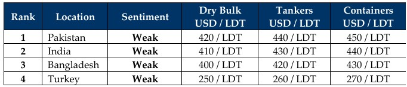

GMS Week 29 – SLOWDOWN SURPRISE!
in Weekly Demolition Reports 21/07/2025

The ongoing tariffs conundrum that has brought on the recent and ongoing global instability, has also seen ship recycling markets reacting in confusion for over 2 months now (perhaps even longer). As global trade and even trade route disruptions are being reported once again (on account of the Houthi’s recently sinking a couple of merchant ships in the Red Sea), inflation has started to rear its head again, rising in the U.S. to 2.7% in June (up from 2.4% in May). The U.S. Dollar has meanwhile found itself firming against all ship recycling destinations once again this week while oil futures find themselves on the opposite side, sliding 0.3% down to USD 67.3/barrel as both Trump and the EU threaten additional sanctions against ongoing Russian aggression in Ukraine, including those specifically targeting Russian energy exports. Topping it all off is perhaps the most critical of all essentials is the state of the Baltic Exchange’s Dry Index that found itself rising about 1.1% this week and reaching its highest level since September 2024, placing even more pressure on the supply of tonnage, which has made a surprisingly mild return over the last couple of weeks and as highlighted by the state of the various sub-continent waterfronts this week (including even in Pakistan).
As we filter down to the ship recycling end of things, the last few months of diminished activity across sub-continent recycling markets has shown few signs of abating while sentiments and pricing remain muted overall, whilst key markets grapple with recently imposed HKC realities that have resulted in the industry getting increasingly comfortable at tabling offers below the USD 400/LDT mark on certain tonnage, particularly as both Alang and Chattogram face pressures of their own. There have also been few (market) sales being done at these lower levels even though Pakistani offerings remain well above the USD 400/Ton mark and have been the top placed market for about a month now. During this time, the Gadani gang has even managed to secure a few dry bulk vessels in recent times as both Panamax and Handymax units have been heading to local recyclers who are able to provide provisional DASR certificates for inward permissions. Bangladeshi NOCs are still proving challenging as delays on vessels arriving here are now becoming customary as government departments and ministries take time on granting approvals, while local banks simultaneously prolong the approval and opening of L/Cs. Yet, there have been several larger LNG sales and ongoing negotiations in recent weeks, in what has been the most active sector of the ship recycling markets of late. India meanwhile remains close on its heels with a healthy batch of acquisitions of its own, as owners unwilling to test Pakistani DASRs are willing to take a hit on the lower, yet safer offerings from neighboring Alang.
Overall, as global trade seems to turn on its head, an increased supply of candidates may start to hit the markets in the second half of the year, especially as some of these seriously older units that keep getting rescued, will eventually lose future trade prospects and head for the shores. Moreover, we may also see a shift in containers for recycling as Red Sea traffic stalls and longer trips around the COGH make voyages increasingly expensive for ship owners. All of this coming at a time when vessel offerings already face ongoing pressures. Turkey at the far end, continues suffering in silence.
For Week 29 of 2025, GMS Market Rankings / vessel indications are as below.

📄 Download PDF: Ship-recycling-market-insight-Week-29-07-18-2025-Slowdown_Surprise.pdfSource: GMS,Inc. https://www.gmsinc.net/gms_new/index.php/web
 Translate
Translate{kind=link}